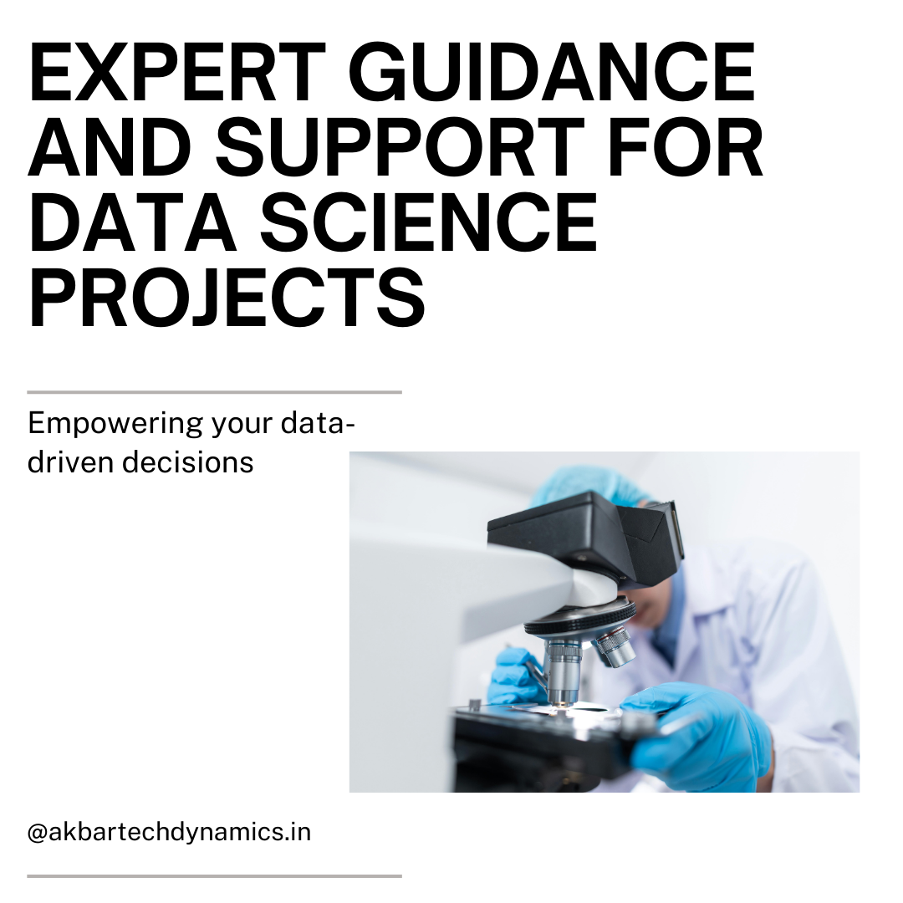

<html lang="en"></html>

<head>
  <meta charset="utf-8">
  <meta content="width=device-width, initial-scale=1.0" name="viewport">
  <title>AkbarTechDynamics</title>
  <meta content="Make data science easy with our expert guidance. Discover how we can help you leverage data for success with tailored project support. Let's make data work for you!" name="description">
  <meta content="web applications, AI, ML, data science, business growth solutions" name="keywords">
  <link href="assets/img/oMkMZZ01.svg" rel="icon"> 
  <link href="assets/img/oMkMZZ01.svg" rel="apple-touch-icon">
  <link href="https://fonts.googleapis.com" rel="preconnect">
  <link href="https://fonts.gstatic.com" rel="preconnect" crossorigin>
  <link href="https://fonts.googleapis.com/css2?family=Roboto:ital,wght@0,100;0,300;0,400;0,500;0,700;0,900;1,100;1,300;1,400;1,500;1,700;1,800;1,900&family=Poppins:ital,wght@0,100;0,200;0,300;0,400;0,500;0,600;0,700;0,800;0,900&display=swap" rel="stylesheet">
  <link href="assets/vendor/bootstrap/css/bootstrap.min.css" rel="stylesheet">
  <link href="assets/vendor/bootstrap-icons/bootstrap-icons.css" rel="stylesheet">
  <link href="assets/vendor/aos/aos.css" rel="stylesheet">
  <link href="assets/vendor/glightbox/css/glightbox.min.css" rel="stylesheet">
  <link href="assets/vendor/swiper/swiper-bundle.min.css" rel="stylesheet">
  <link href="assets/css/main.css" rel="stylesheet">
  <link rel="canonical" href="https://akbartechdynamics.in/blog20-details.html">
  <meta property="og:title" content="AkbarTechDynamics">
  <meta property="og:description" content="Innovative solutions for business growth, specializing in web applications, AI, ML, and data science.">
  <meta property="og:image" content="https://akbartechdynamics.in/assets/img/oMkMZZ01.svg">
  <meta property="og:url" content="https://akbartechdynamics.in/">
  <script type="application/ld+json">
  {
    "@context": "https://schema.org",
    "@type": "Organization",
    "name": "AkbarTechDynamics",
    "url": "https://akbartechdynamics.in",
    "logo": "https://akbartechdynamics.in/assets/img/oMkMZZ01.svg",
    "contactPoint": {
      "@type": "ContactPoint",
      "telephone": "+91 73370 90600",
      "contactType": "Customer Service"
    },
    "sameAs": [
      "https://www.linkedin.com/in/akbar-pasha-mohammad-68b817140",
      "https://www.instagram.com/akbartechdynamics"
    ]
  }
  </script>

</head>

<body class="index-page">
  <header id="header" class="header d-flex align-items-center fixed-top">
    <div class="container-fluid container-xl position-relative d-flex align-items-center">
      <a href="index.html" class="logo d-flex align-items-center me-auto">
        
        <h1 class="sitename">AkbarTechDynamics</h1>
      </a>
      <nav id="navmenu" class="navmenu">
        <ul>
          <li><a href="index.html">Home</a></li>
          <li><a href="index.html#about">About Us</a></li>
          <li><a href="index.html#services">Services</a></li>
          <li><a href="index.html#contact">Contact</a></li>
          <li><a href="blogs.html">Blog</a></li>
          <li><a href="careers.html">Careers</a></li>
          <li><a href="portfolio.html">Portfolio</a></li>
        </ul>
        <i class="mobile-nav-toggle d-xl-none bi bi-list"></i>
      </nav>
    </div>
  </header>

  <main class="main">
    <!-- Page Title -->
    <div class="page-title">
      <div class="heading">
        <div class="container">
          <div class="row d-flex justify-content-center text-center">
            <div class="col-lg-8">
              <h1>Blog Details</h1>
              <p class="mb-0">Welcome to AkbarTech Dynamics! We're Here to Help You Ace Your Academic Projects with Cutting-Edge Technology and Personalized Solutions. Let's Innovate Together!</p>
            </div>
          </div>
        </div>
      </div>
    </div><!-- End Page Title -->

    <div class="container">
      <div class="row">
        <div class="col-lg-8">
          <!-- Blog Details Section -->
          <section id="blog-details" class="blog-details section">
            <div class="container">
              <article class="article">
                <h2 class="title">Data Science Made Easy with Our Expert Guidance. Let's Make Data Work for You!</h2>
                <div class="meta-top">
                  <ul>
                    <li class="d-flex align-items-center"><i class="bi bi-person"></i> <a href="#">Akbar Pasha</a></li>
                    <li class="d-flex align-items-center"><i class="bi bi-clock"></i> <a href="#"><time datetime="2024-09-11">Sep 11, 2024</time></a></li>
                  </ul>
                </div><!-- End meta top -->

                <div class="content">
                  <h3>Introduction</h3>
                  <p>Data science is transforming the way we approach problems, make decisions, and drive innovation across industries. However, diving into data science can seem daunting, especially if you’re new to the field or managing a complex project. That’s where we come in. Data science made easy with our expert guidance. Let's make data work for you! With our tailored support and experienced team, we can help you navigate the complexities of data science and unlock its full potential for your academic or professional needs.</p>
                  <h3>Why Data Science Is Essential Today</h3>
                  <h4>The Power of Data</h4>
                  <p>In today's digital world, data is everywhere. From social media and e-commerce to healthcare and finance, vast amounts of data are generated every second. The ability to analyze and interpret this data effectively can provide invaluable insights, drive decision-making, and foster innovation. This makes data science a crucial skill set in the modern economy.</p>
                  <h4>Challenges in Data Science</h4>
                  <p>Despite its potential, data science comes with its own set of challenges. Many people struggle with understanding complex algorithms, managing large datasets, and applying the right tools and techniques. Without proper guidance, it’s easy to feel overwhelmed and lose sight of your project goals.</p>
                  <h3>How Our Expert Guidance Makes Data Science Easy</h3>
                  <h4>Step 1: Understanding Your Goals and Data Needs</h4>
                  <p>Every successful data science project starts with a clear understanding of the goals and data requirements. Our experts help you define these crucial elements to ensure your project is on the right track from the beginning.</p>
                  <p><b>Goal Setting: </b>We work with you to establish clear, achievable goals for your data science project, ensuring that every step you take is aligned with your desired outcomes.</p>
                  <p><b>Data Requirements Assessment: </b>Our team assists in identifying the types of data you need and the best sources to obtain them, whether it’s from internal databases, public repositories, or third-party APIs.</p>
                  <h4>Step 2: Simplifying Data Collection and Preparation</h4>
                  <p>Data collection and preparation are foundational steps in any data science project. Our expert guidance helps you streamline these processes, making them efficient and effective.</p>
                  <p><b>Data Sourcing: </b>We guide you in sourcing high-quality data that is relevant to your project’s objectives, saving you time and effort.</p>
                  <p><b>Data Cleaning and Preprocessing: </b>Our experts assist in cleaning and preprocessing your data to remove any inaccuracies, inconsistencies, or missing values, ensuring it’s ready for analysis.</p>
                  <p><b>Data Transformation: </b>We help you transform raw data into a structured format suitable for analysis, applying techniques like normalization, encoding, and feature scaling as needed.</p>
                  <h4>Step 3: Choosing the Right Tools and Techniques</h4>
                  <p>Selecting the appropriate tools and techniques is critical for effective data analysis. Our guidance ensures that you use the most suitable methods for your specific project needs.</p>
                  <p><b>Tool Selection: </b>We help you choose the right data science tools, from popular programming languages like Python and R to specialized software like SAS, MATLAB, or Tableau.</p>
                  <p><b>Algorithm Recommendation: </b>Based on your project goals and data characteristics, our experts recommend the best algorithms, whether it’s regression, classification, clustering, or neural networks.</p>
                  <p><b>Model Building and Training: </b>We provide hands-on support in building, training, and validating your models, ensuring that they are robust and reliable.</p>
                  <h4>Step 4: Making Data-Driven Insights Accessible</h4>
                  <p>Data science is not just about crunching numbers; it's about making data-driven insights accessible and actionable. We help you present your findings clearly and effectively.</p>
                  <p><b>Data Visualization: </b>Our experts assist in creating compelling visualizations that make complex data easy to understand, using tools like Matplotlib, Seaborn, and Power BI.</p>
                  <p><b>Dashboard Development: </b>For ongoing projects, we help develop interactive dashboards that allow stakeholders to explore data and insights in real time.</p>
                  <p><b>Clear Reporting: </b>We guide you in writing clear, concise reports that communicate your findings effectively to both technical and non-technical audiences.</p>
                  <h4>Step 5: Ongoing Support and Iterative Improvement</h4>
                  <p>Data science projects often require ongoing refinement and improvement. Our team provides continuous support to help you iterate and enhance your models and analyses.</p>
                  <p><b>Performance Monitoring: </b>We help set up monitoring systems to track model performance and detect any drift or degradation over time.</p>
                  <p><b>Model Optimization: </b>Our experts provide guidance on optimizing your models for better accuracy, efficiency, and scalability.</p>
                  <p><b>Continuous Learning: </b>Stay ahead of the curve with our support in learning new techniques, tools, and best practices in data science.</p>
                  
                  <h3>The Benefits of Our Expert Data Science Guidance</h3>
                  <h4>Simplified Learning Curve</h4>
                  <p>Data science can seem complex, but with our expert guidance, you can navigate it more easily. We break down complex concepts into manageable steps, helping you learn and apply data science skills effectively.</p>
                  <h4>Time and Resource Efficiency</h4>
                  <p>Our guidance helps you avoid common pitfalls and errors, saving you time and resources. By streamlining data collection, preparation, and analysis, we enable you to focus on what matters most—generating actionable insights.</p>
                  <h4>Customized Solutions</h4>
                  <p>We tailor our support to your specific needs, whether you’re a beginner looking to get started or an experienced data scientist seeking to refine your skills. Our customized approach ensures that you receive the most relevant and effective guidance.</p>
                  <h4>Improved Decision-Making</h4>
                  <p>With the right tools and techniques, you can turn data into actionable insights that drive better decision-making. Our support ensures that you are equipped to leverage data effectively, leading to smarter strategies and improved outcomes.</p>
                  <h3>Success Stories: How Our Guidance Has Made Data Science Easy</h3>
                  <h4>Jennifer S., Data Analyst</h4>
                  <p>"I was new to data science and found the field overwhelming. The expert guidance provided by this team helped me understand the basics and apply them to my project. From data cleaning to visualization, their support made a complex process easy to manage. I now feel much more confident in my data science skills."</p>
                  <h4>Robert M., Business Intelligence Manager</h4>
                  <p>"Our company needed to build a predictive model for sales forecasting, but we lacked the expertise in-house. The team’s guidance was invaluable—they walked us through every step, from data preparation to model deployment. The results were outstanding, and we were able to make data-driven decisions that boosted our sales performance."</p>
                  <h3>Getting Started with Our Data Science Support Services</h3>
                  <h4>Step 1: Reach Out for a Consultation</h4>
                  <p>Start by scheduling a consultation with our data science experts. We’ll discuss your project goals, challenges, and how our guidance can help you succeed.</p>
                  <h4>Step 2: Develop a Customized Support Plan</h4>
                  <p>Based on your consultation, we’ll create a customized support plan tailored to your specific needs and project requirements.</p>
                  <h4>Step 3: Begin Your Data Science Journey</h4>
                  <p>With your support plan in place, you’ll receive ongoing guidance from our team of experts. From ideation to execution, we’re here to help you make data science easy and effective.</p>
                  <h3>Conclusion</h3>
                  <p>Data science doesn’t have to be intimidating. With our expert guidance, you can make data science easy and effective, turning complex challenges into manageable tasks. Whether you're new to the field or looking to enhance your existing skills, we’re here to help you leverage data for success. Let's make data work for you! Reach out today to start your journey towards mastering data science with confidence and ease.</p>
                </div><!-- End post content -->
              </article>
            </div>
          </section><!-- /Blog Details Section -->
        </div>

        <div class="col-lg-4 sidebar">
          <div class="widgets-container">
            <!-- Recent Posts Widget -->
            <div class="recent-posts-widget widget-item">
              <h3 class="widget-title">Recent Posts</h3>
              <div id="content-container"></div>
              <div id="recent-posts-content"></div>        <!-- Content from RecentPosts.html will be injected here -->
                <script>
                  document.addEventListener('DOMContentLoaded', function() {
                    fetch('RecentPosts.html')
                    .then(response => {
                      if (!response.ok) {
                        throw new Error('Network response was not ok');
                      }
                      return response.text();
                    })
                    .then(data => {
                      // Create a temporary element to parse HTML
                      let tempDiv = document.createElement('div');
                      tempDiv.innerHTML = data;
                      // Assuming that the content in RecentPosts.html is in a specific element, e.g., <div id="recent-posts-content">
                        let content = tempDiv.querySelector('#recent-posts-content');
                        // Insert the content into the container
                        document.getElementById('content-container').innerHTML = content.innerHTML;
                      })
                      .catch(error => {
                        console.error('There was a problem with the fetch operation:', error);
                      });
                     })
                </script>
            </div>  
          </div>
        </div>  
      </div>
    </div>

    <!-- Faq Section -->
    <section id="faq" class="faq section">
      <!-- Section Title -->
      <div class="container section-title" data-aos="fade-up">
        <p>Frequently Asked Questions</p>
      </div><!-- End Section Title -->
      <div class="container">
        <div class="row">
          <div class="col-lg-6" data-aos="fade-up" data-aos-delay="100">
            <div class="faq-container">
              <div class="faq-item faq-active">
                <h3>How does your guidance make data science easy?</h3>
                <div class="faq-content">
                  <p>Our expert guidance breaks down complex data science processes into manageable steps. We provide support in every aspect, from data collection and preparation to analysis and visualization, making it easier for you to achieve your goals.</p>
                </div>
                <i class="faq-toggle bi bi-chevron-right"></i>
              </div><!-- End Faq item-->
              <div class="faq-item">
                <h3>Can you help me choose the right tools for my data science project?</h3>
                <div class="faq-content">
                  <p>Yes, our experts are familiar with a wide range of data science tools and technologies. We help you select the most appropriate tools based on your project requirements and objectives.</p>
                </div>
                <i class="faq-toggle bi bi-chevron-right"></i>
              </div><!-- End Faq item-->
              <div class="faq-item">
                <h3>What types of projects can your guidance support?</h3>
                <div class="faq-content">
                  <p>Our guidance can support a wide range of data science projects, including predictive modeling, customer segmentation, anomaly detection, and more. Whether you're a beginner or an experienced professional, we can tailor our support to your needs.</p>
                </div>
                <i class="faq-toggle bi bi-chevron-right"></i>
              </div><!-- End Faq item-->
            </div>
          </div><!-- End Faq Column-->
          <div class="col-lg-6" data-aos="fade-up" data-aos-delay="200">
            <div class="faq-container">
              <div class="faq-item">
                <h3>How do I get started with your data science support services?</h3>
                <div class="faq-content">
                  <p>To get started, simply schedule a consultation with our team. We’ll discuss your needs and develop a customized plan to provide the support you need for your data science project.</p>
                </div>
                <i class="faq-toggle bi bi-chevron-right"></i>
              </div><!-- End Faq item-->
              <div class="faq-item">
                <h3>Do you offer ongoing support after the initial guidance?</h3>
                <div class="faq-content">
                  <p>Yes, we offer ongoing support to help you maintain and improve your models and analyses over time. Our team is available to assist with any questions or challenges you encounter along the way.</p>
                </div>
                <i class="faq-toggle bi bi-chevron-right"></i>
              </div><!-- End Faq item-->
              <div class="faq-item">
                <h3>Is my data secure when using your services?</h3>
                <div class="faq-content">
                  <p>Absolutely. We prioritize data security and confidentiality. Our services are designed with robust security measures to ensure that your data is protected throughout the project.</p>
                </div>
                <i class="faq-toggle bi bi-chevron-right"></i>
              </div><!-- End Faq item-->
            </div>
          </div><!-- End Faq Column-->
        </div>
      </div>
    </section><!-- /Faq Section -->
  </main>

  <footer id="footer" class="footer">
    <div class="container footer-top">
      <div class="row gy-4">
        <div class="col-lg-4 col-md-6 footer-about">
          <a href="#" class="d-flex align-items-center">
            <span class="sitename">AkbarTechDynamics</span>
          </a>
          <div class="footer-contact pt-3">
            <p>Khammam</p>
            <p>Telanagana, IN 507003</p>
            <p class="mt-3"><strong>Phone:</strong> <span>+91 73370 90600</span></p>
            <p><strong>Email:</strong> <span>akbartechdynamics@gmail.com</span></p>
          </div>
        </div>
        <div class="col-lg-4 col-md-12">
          <h4>Follow Us</h4>
          <p>For more Updates On Trainings/Internships/JOB Opportunities</p>
          <div class="social-links d-flex">
            <a href="https://www.instagram.com/akbartechdynamics?igsh=MXNtcHJqbnJseWU0dw%3D%3D&utm_source=qr" target="_blank"><i class="bi bi-instagram"></i></a>
            <a href="https://www.linkedin.com/in/akbar-pasha-mohammad-68b817140?lipi=urn%3Ali%3Apage%3Ad_flagship3_profile_view_base_contact_details%3B8KxVN2vEQw2TBM5io%2F00OA%3D%3D" target="_blank"><i class="bi bi-linkedin"></i></a>
          </div>
        </div>
      </div>
    </div>
  </footer>

  <a href="#" id="scroll-top" class="scroll-top d-flex align-items-center justify-content-center"><i class="bi bi-arrow-up-short"></i></a>
  <script src="assets/vendor/bootstrap/js/bootstrap.bundle.min.js"></script>
  <script src="assets/vendor/php-email-form/validate.js"></script>
  <script src="assets/vendor/aos/aos.js"></script>
  <script src="assets/vendor/glightbox/js/glightbox.min.js"></script>
  <script src="assets/vendor/purecounter/purecounter_vanilla.js"></script>
  <script src="assets/vendor/imagesloaded/imagesloaded.pkgd.min.js"></script>
  <script src="assets/vendor/isotope-layout/isotope.pkgd.min.js"></script>
  <script src="assets/vendor/swiper/swiper-bundle.min.js"></script>
  <script src="assets/js/main.js"></script>
</body>

</html>